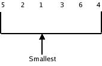
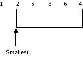
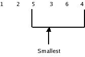

The selection sort searches all of the elements in a list until it finds the smallest element. It "swaps" this with the first element in the list. Next it finds the smallest of the remaining elements, and "swaps" it with the second element.
Repeat this process until only the last two elements in the list are compared.
Explanation with an example:
Consider the data elements 5 2 1 3 6 4.

Swap the smallest element with the first element.
1 2 5 3 6 4
After the smallest element is in the first position, we continue the process by taking second element and looking for the next smallest element in the remaining unsorted array.

In this special case, the next smallest element is in the second position already. Swapping the element with itself keeps it in the same position.
1 2 5 3 6 4
After the next smallest element is in the second position, we continue as above for the next smallest element.

swap this smallest element with the third element.
swap this element with the fourth element
1 2 3 4 6 5
Continue in the same way for the next smallest element we have
1 2 3 4 5 6
It can be noted that the largest of all the elements is in the last position after completion of all passes. That means the maximum number of passes required to sort N elements is N-1.